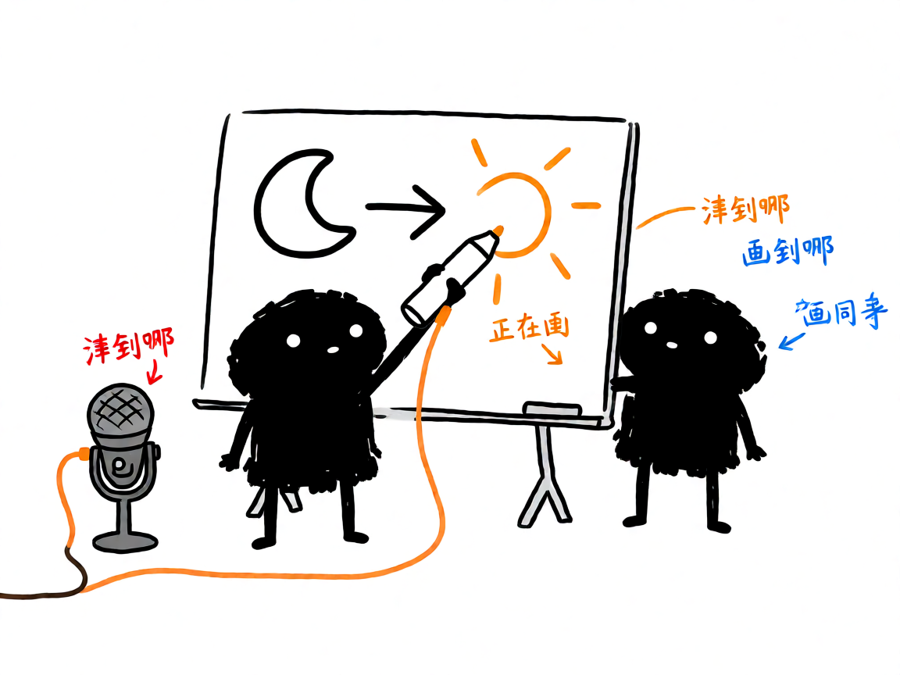

想让 AI 画出「讲到哪画到哪」的白板讲解视频？—— whiteboard-explainer 介绍
把一篇讲稿变成白板手绘动画视频：图形被一笔笔描出来、文字逐笔写出，旁白讲到哪，画面就画到哪——不是 PPT 翻页，是真·手绘过程。这就是 whiteboard-explainer 干的事。

它到底能做什么
- 真手绘过程：白板图上的图形按笔画绘出、文字逐笔写出，元素级精确对齐旁白（讲到哪画到哪）。
- 两种成片模式：slide 序列（一拍一图，适合逐句讲解）和单画布生长（一张大图逐步长出来，适合数学推导、流程图、知识图谱）。
- 本地 CPU 渲染：零 API 成本、帧帧确定、改一句重渲一秒，不怕云服务限流。
- 免费工具链：PIL 程序化画白板图 + Agnes 免费生图（具象画面）+ edge-tts 免费旁白 + ffmpeg 合成，全链路不花钱。
怎么用
场景 1：做知识科普视频 你：把这篇"什么是日全食"的讲稿做成白板动画。 AI：拆好每拍一图 + 逐句 TTS，月亮画出来的时候旁白正好讲到月亮，太阳被挡住的瞬间音画同步。
场景 2：数学推导视频 你：把勾股定理的推导做成逐步生长的白板视频。 AI：一张大画布，讲到辅助线画辅助线、讲到面积等式写面积等式，整块板子随着讲解慢慢长满。
谁适合用
- 做知识区、科普区视频的创作者。
- 要把课件、推导、流程图变成"手绘讲解感"视频的老师和学生。
- 想要确定可重渲、又不想为 AI 视频付费的效率型选手。
一点说明
本技能基于 whiteboard-animator 引擎（PyPI 包，首次 setup 自动安装，自带 83MB 文字检测模型）。AI 生图仅画无字插画，所有中文文字用本机字体叠加，保证字字清晰。渲染速度约为视频时长，8 秒片段约 5-8 秒出片。